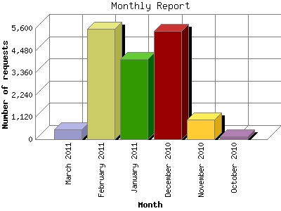

The Monthly Report identifies activity for each month in the report
time frame. Remember that each page hit can result in several server requests
as the images for each page are loaded.
Note: Depending on the
report time frame, the first and last months may not represent a complete
month's worth of data, resulting in lower hits.

| Month | Number of requests | Number of page requests | |
|---|---|---|---|
| 1. | October 2010 | 142 | 110 |
| 2. | November 2010 | 992 | 304 |
| 3. | December 2010 | 5,454 | 689 |
| 4. | January 2011 | 4,035 | 419 |
| 5. | February 2011 | 5,577 | 606 |
| 6. | March 2011 | 505 | 68 |
Most active month December 2010 : 689 pages sent. 5,577 requests handled.
Monthly average: 366 pages sent. 2,784 requests handled.
This report was generated on March 8, 2011 19:03.
Report time frame October 8, 2010 18:11 to March 8, 2011 18:15.
| Web statistics report produced by: analog 5.1 / Report Magic 2.21 |